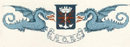

Klubb för före detta professionella från marinen. Klubben har sin egen web ring.
Detta är lite text som är klippt från den officiella INORC-websidan.
CITAT
I.N.O.R.C. M E D L E M M A R
I.N.O.R.C. består av tre kategorier: Vanliga medlemmar, associerade medlemmar, och hedersmedlemmar.
Vanliga medlemmar är de som har varit eller fortfarande är yrkesverksamma i flottan eller handelsflottan, eller inom telekommunikation, licensierade radioamatörer och/eller lyssnaramatör och duktig i telegrafist.
De associerade medlemmarna är de som arbetar eller har arbetat inom telekommunikation, att arbeta med utbredning av telegrafi och licensierade radioamatörer och/eller lyssnaramatör och duktig i telegrafi.
Hedersmedlemmar är de som, genom sin status eller sina vetenskapliga framgångar inom telekommunikation, förhöjer klubbens anseende. Hedersmedlemmar är också alla före detta ordförande i INORC.
SLUT CITAT
Email:...i1qod (at-tecknet) Lnet . it...